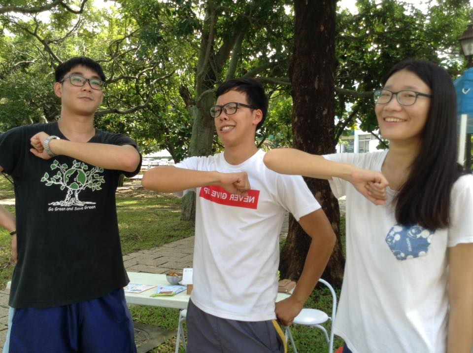
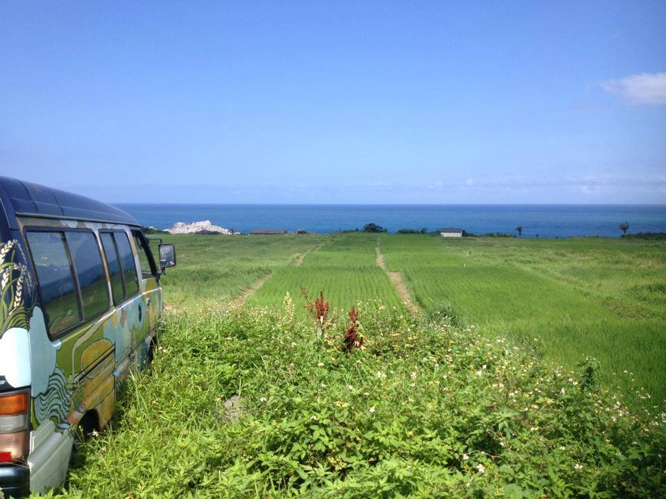

綠市集需要各式人才，協助文字記錄、產地參訪、搬帳篷、攝影記錄、社區宣傳、紙袋回收與活動支援。歡迎各方好友加入，請私訊綠市集臉書粉絲專頁，謝謝！


歡迎認同「友善環境與土地」的農友、加工者與理念團體加入我們。請詳閱基本規則與程序，確認符合基本規則再申請。
一、申請加入攤位：（需同意並確認符合以下基本規則）
1. 農產品須自己生產，且不使用化學農藥、化學肥料或除草劑之友善栽培的作物
2. 農產品及加工品不得使用基改作物產品。
3. 加工品需自己生產或以自己研發配方生產，所使用主原料需友善環境的作物，不得使用防腐劑、增稠劑等人工合成添加物料。
4. 綠市集攤位，必須種植者或加工者本人或配偶子女親自擺攤，以達到與消費者互動認識的初衷。
5. 市集上架產品需經審核通過，新增銷售的品項需先符合規範與向理事會申請通過後方可上架銷售。
6. 參與市集攤位，必須承擔市集公共事務，市集當天來回搬運帳篷.鐵架及桌椅。
7. 參與市集攤位，必須加入「台灣綠市集協會」，需繳交入會費以及年費。
8. 市集攤位架上，不得販售非自家產品，若有違反按市集規範議處。
9. 當日市集夥伴營收，需繳交10%現金給市集，作為公費使用。（理念公益團體不收費）
10. 申請審核過程中，協會理事將親訪農場或加工室。
二、申請加入程序：
1. 親自到市集走訪，以「來賓攤位」出席市集。
2. 在市集自我介紹。
3. 提出加入綠市集申請。
4. 理事拜訪農場或加工室。
5. 理事過半數開會，同意申請農場或加工室，並由市集管理人正式通知。
6. 需簽署合作備忘錄並繳交入會費以及年費，即正式加入竹蜻蜓綠市集。